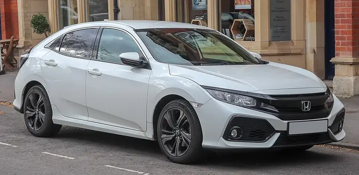
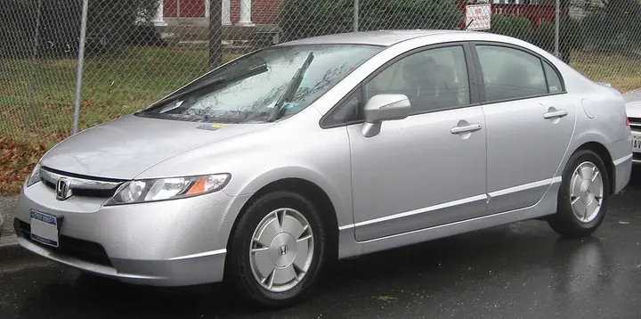
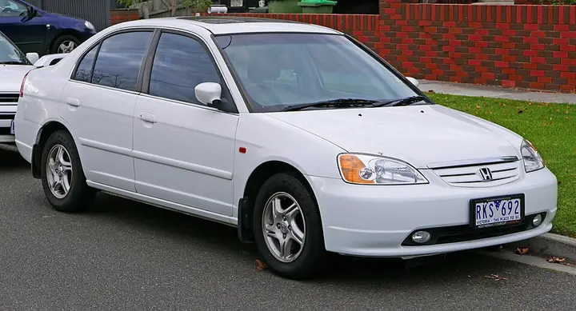
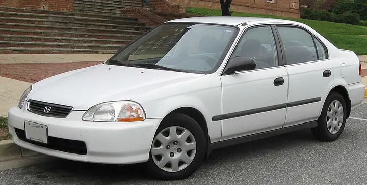
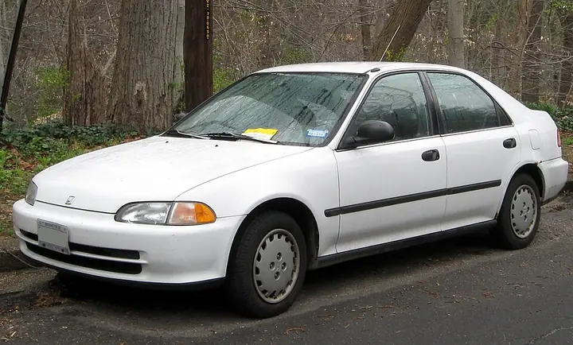
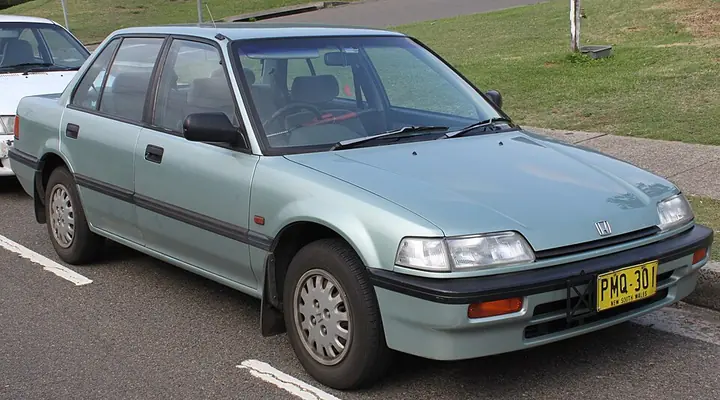
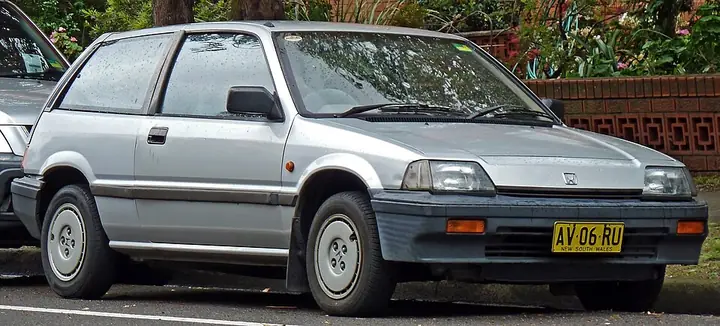
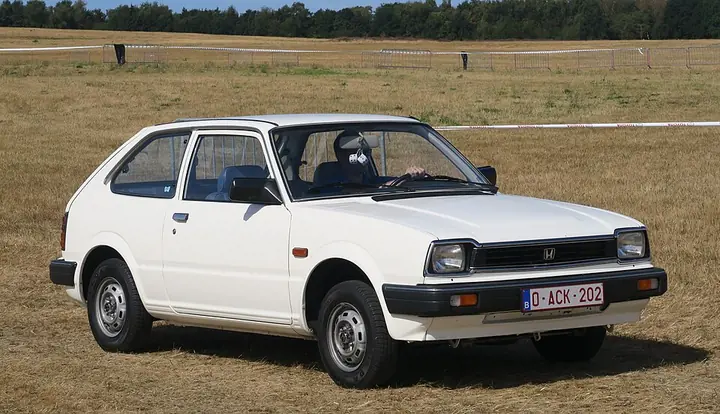
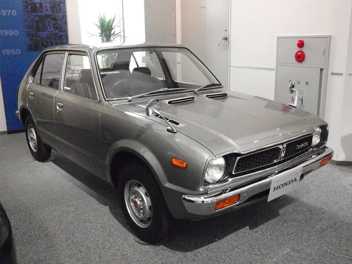

Honda Civic
Eleventh generation (2021) · 2021–present
Abstract
This generation of the Honda Civic is a compact car (C), built 2021–present in Japan: Yorii, Saitama (Europe and Turkey liftback), Canada: Alliston, Ontario (HCM, North America sedan), United States: Greensburg, Indiana (HMIN, North America liftback) and other plants. Body styles: 4-door sedan (FE), 5-door liftback (FL). Layout: Front-engine, front-wheel-drive. Designed by Yuki Ishii and Hitomaro Asano. This generation has its own article: Honda Civic (eleventh generation).

1Specifications
| Production | 2021–present |
|---|---|
| Model years | 2022–present |
| Assembly | Japan: Yorii, Saitama (Europe and Turkey liftback)Canada: Alliston, Ontario (HCM, North America sedan)United States: Greensburg, Indiana (HMIN, North America liftback)China: Wuhan (Dongfeng Honda); Guangzhou (GAC Honda, Integra)Pakistan: Lahore (Honda Atlas, Asia sedan)Thailand: Prachinburi (Europe and Turkey sedan)Malaysia: Alor Gajah, Melaka (Africa sedan) |
| Designer | Yuki Ishii and Hitomaro Asano |
| Class | Compact car (C) |
| Body style | 4-door sedan (FE)5-door liftback (FL) |
| Layout | Front-engine, front-wheel-drive |
| Platform | Honda Architecture (HA) |
| Engine | Petrol:1.5 L L15B7 DOHC VTEC turbo I41.5 L L15BG FFV VTEC turbo I41.5 L L15BJ VTEC I41.5 L L15C VTEC turbo I41.5 L L15CA VTEC turbo I4 (Civic Si)2.0 L K20C2 i-VTEC I4 (2022–2024)2.0 L K20C9 Atkinson I4 (2025–)Petrol hybrid:2.0 L LFC I4 (e:HEV) |
| Electric motor | 2x permanent magnet motors (e:HEV) |
| Transmission | CVT6-speed manualeCVT |
| Battery | Lithium-ion (e:HEV) |
| Wheelbase | 107.7 in |
| Length | 184.0 in (sedan)179.1 in (liftback) |
| Width | 70.9 in |
| Height | 55.5-55.7 in |
| Weight | 2877–3218 lb |
| Also called | Honda Integra (China) |
| Related | Acura Integra (2023)Honda ZR-V/HR-V (RZ)Acura ADXHonda CR-V (sixth generation)Honda Prelude (BF1)Mitsuoka M55 |
| Predecessor | Honda Civic (tenth generation)Honda Insight (third generation) (for hybrid) |
2Versions
- 2024 facelift
- Civic e:HEV
- Civic Type R
- Mitsuoka M55
3Previous generations


_VTi-L_sedan_(2018-10-01)_01.jpg){kind=link}



_GLi_sedan_(2015-05-29)_01.jpg){kind=link}





.jpg){kind=link}

_GL_hatchback_(2010-10-02).jpg){kind=link}



![Kzaral [1]](https://commons.wikimedia.org/wiki/File:Honda_Civic_CVCC.jpg){kind=link}
4Generation by generation
Length +37% from the first to the last
1972 19723,405 mm
1979 19793,760 mm
1983 19833,810 mm
1987 19873,965 mm
1991 19914,069 mm
1995 19954,178 mm
2000 20004,437 mm
2015 20164,492 mm
2021 20214,674 mm
Weight +117% from the first to the last
1972 1972600 kg
1979 1979720 kg
1991 1991925 kg
1995 19951,008 kg
2000 20001,245 kg
2015 20161,242 kg
2021 20211,305 kg